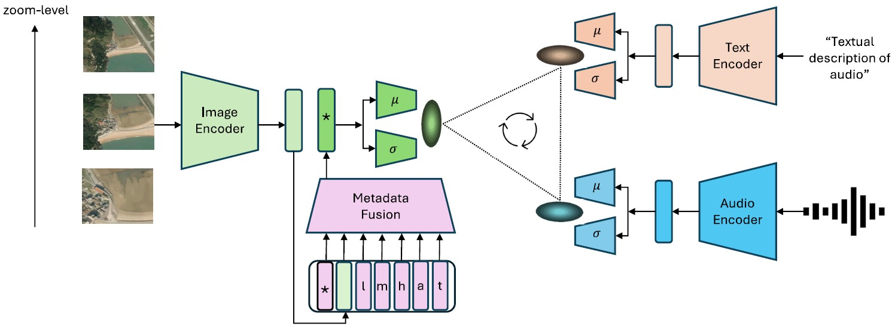
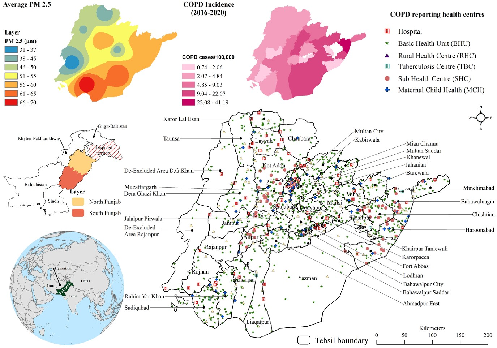
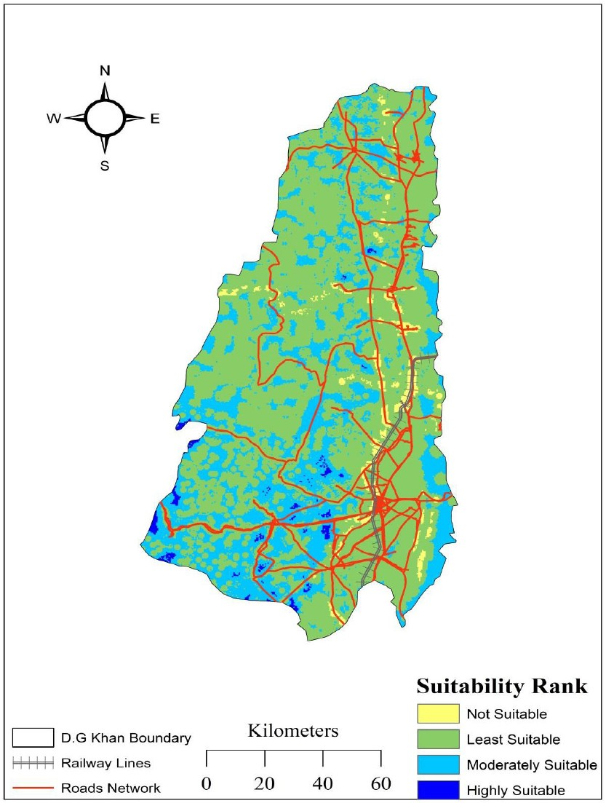
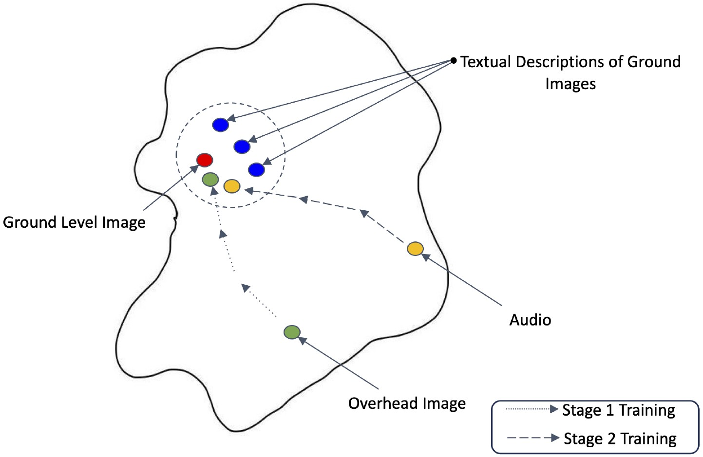
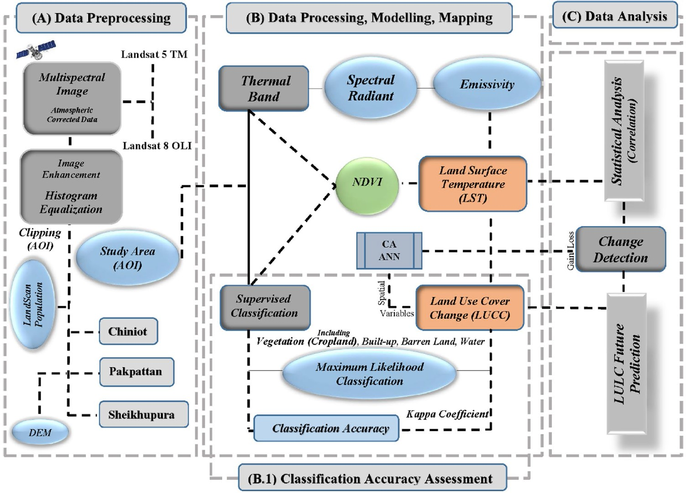
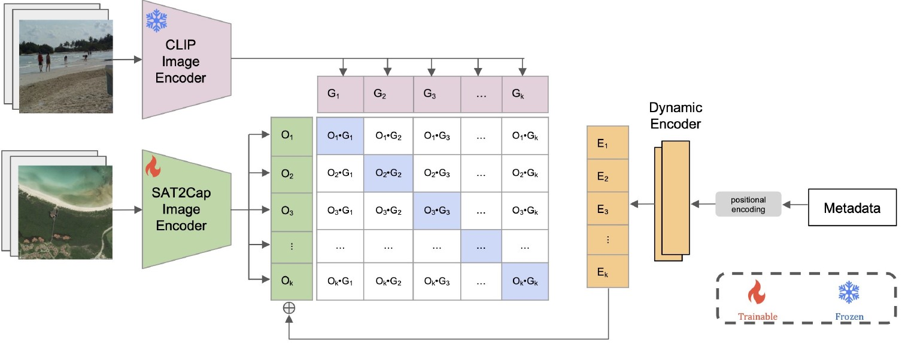

Conference paper
Subash Khanal, Eric Xing, Srikumar Sastry, Aayush Dhakal, Zhexiao Xiong, Adeel Ahmad and Nathan Jacobs
Association for Computing Machinery (ACM) International Conference on Multimedia, 2024
Bibtex
Arxiv
Code
Project Page
LinkedIn
We develop a probabilistic, multi-scale, and metadata-aware embedding space that connects audio, text, and overhead imagery. This enables the creation of dynamic, multi-scale soundscape maps for any geographic region, along with uncertainty estimates for the mapping.
Conference abstract
Adeel Ahmad, Aayush Dhakal, Srikumar Sastry, Subash Khanal, Eric Xing and Nathan Jacobs
American Geophysical Union (AGU), 2024
Bibtex
LinkedIn
We extended deep learning approaches combining GEDI LiDAR and satellite imagery to predict forest vertical structural diversity across complex landscapes, advancing understanding of carbon sequestration, biodiversity, and ecosystem processes.
Conference abstract
Srikumar Sastry, Adeel Ahmad, Aayush Dhakal, Subash Khanal, Eric Xing and Nathan Jacobs
American Geophysical Union (AGU), 2024
Bibtex
We present a generative model that synthesizes realistic, multi-temporal satellite imagery conditioned on location, text, or layout, enabling simulations of past, present, and future Earth surface scenarios.
Conference abstract
Hannah Rae Kerner, Snehal Chaudhari, Aninda Ghosh, Caleb Robinson, Adeel Ahmad, Eddie Choi, Nathan Jacobs, Christopher Holmes, Matthias Mohr and Jennifer Marcus
American Geophysical Union (AGU), 2024
Bibtex
We highlighted the importance of field boundaries as core geospatial datasets, essential for agricultural assessments, climate policies, and MRV of greenhouse gas emissions and sustainable land management.

Journal article
Munazza Fatima, Adeel Ahmad, Ibtisam Butt, Sana Arshad and Behzad Kiani
Environmental Monitoring and Assessment, 2024
Bibtex
We examined COPD incidence in Pakistan (2019–2020) using spatial scan statistics and machine learning, revealing pollution-linked clusters and highlighting the urgent need for air quality interventions.

Journal article
Aneeq Ur Rehman, Adeel Ahmad, Yumna Sadef and Sajid Rashid Ahmad
Indonesian Journal of Geography, 2024
Bibtex
We applied GIS, remote sensing, and AHP to identify suitable solid waste disposal sites in D.G. Khan, providing policymakers with a spatial framework to reduce environmental and health risks.

Conference paper
Aayush Dhakal, Subash Khanal, Srikumar Sastry, Adeel Ahmad and Nathan Jacobs
IEEE International Geoscience and Remote Sensing Symposium (IGARSS), 2024
Arxiv
Bibtex
We developed GeoBind, a deep-learning model that uses satellite imagery to align text, image, and audio into a shared embedding space, enabling versatile multimodal reasoning about geographic locations.

Journal article
Danish Raza, Mudassar Khushi, Hong Shu, Hasnat Aslam, Muhammad Sajid Saleem, Adeel Ahmad, Sahar Mirza, Urooj Saeed and Sami Ullah Khan
Environmental Earth Sciences, 2024
Bibtex
We analyzed multi-year Landsat data to assess urban heat island dynamics in Punjab’s districts, showing how land cover change drives surface temperature variations and forecasting future scenarios with CA modeling.

Conference paper
Aayush Dhakal, Adeel Ahmad, Subash Khanal, Srikumar Sastry, Hannah Kerner and Nathan Jacobs
Conference on Computer Vision and Pattern Recognition - Workshop (CVPR-W), 2024, Best Paper Award
Arxiv
Bibtex
Code
LinkedIn
We introduced Sat2Cap, a weakly supervised framework for zero-shot mapping that learns textual concepts from satellite imagery via contrastive alignment, enabling scalable multimodal mapping without text-labeled data.